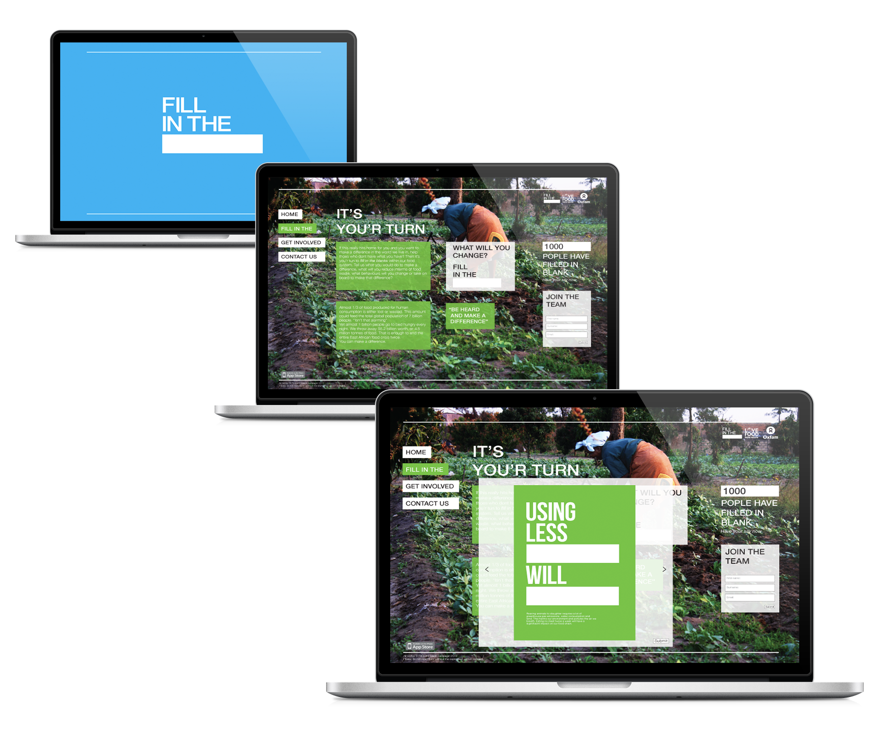
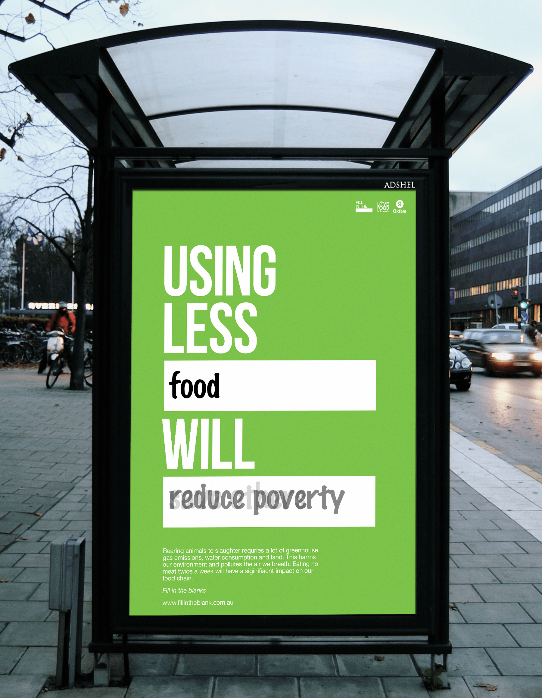
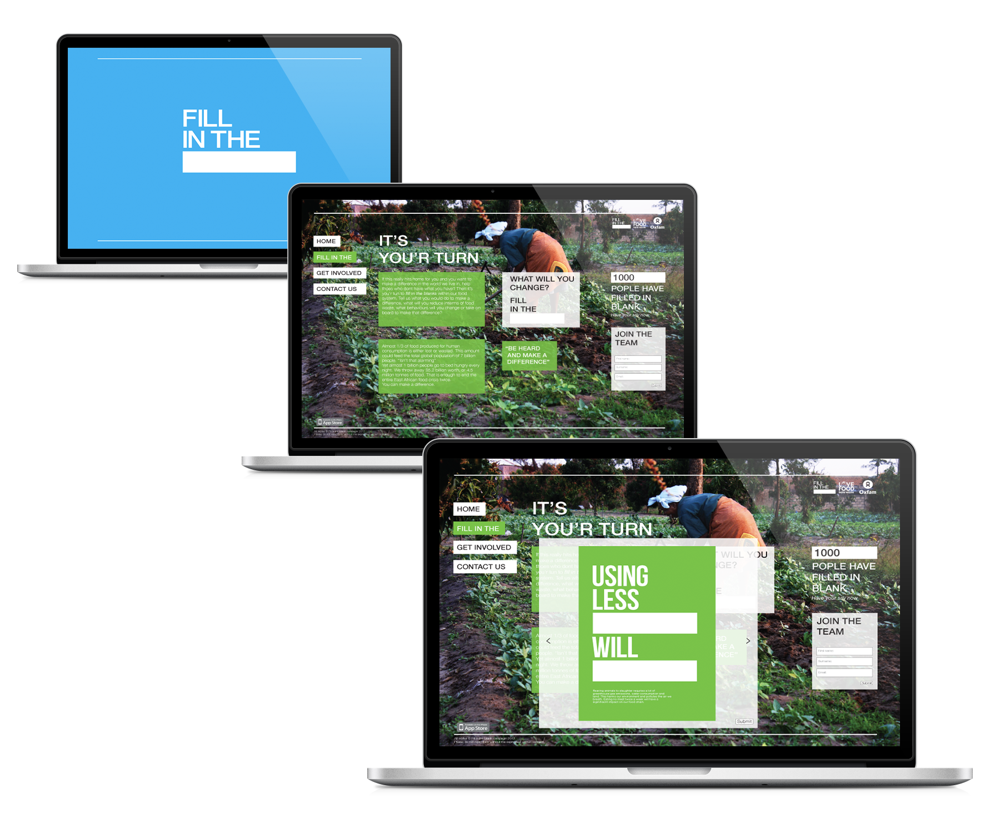
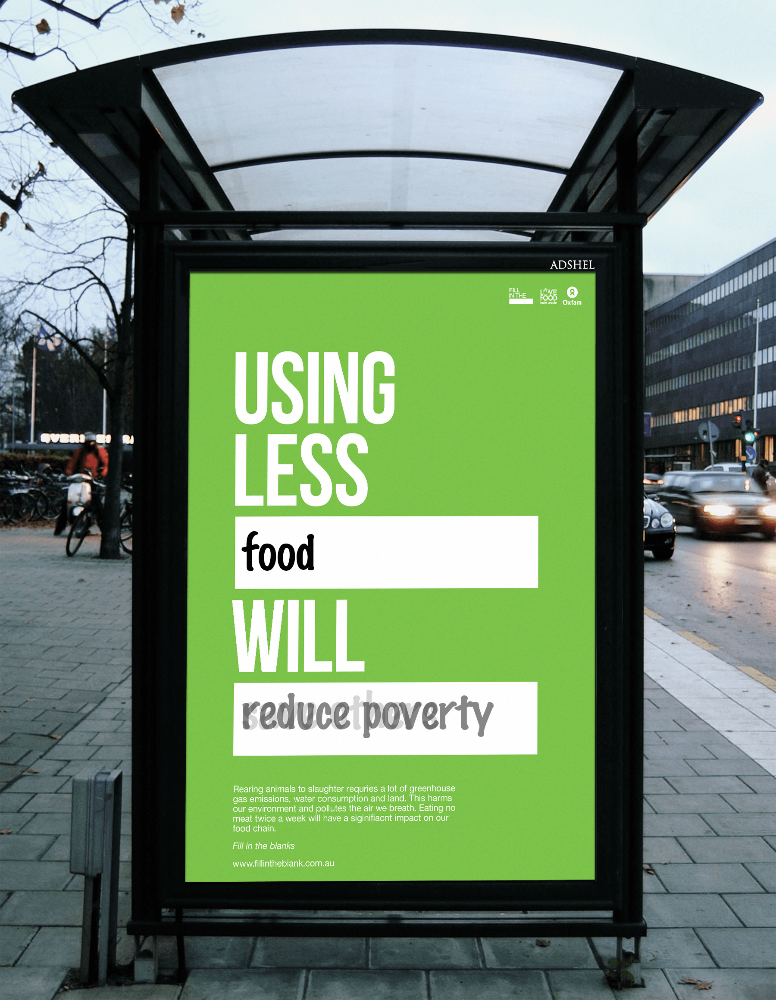

Develop an awareness campaign to encourage young Australians to significantly reduce the amount of edible food they waste and inspire them to see the connection between local food waste and global food justice.
Fill in the blank is aimed at 18-24 year old Australian youth. It contains a series of interactive and inspiring posters that engages the audience and questions their actions in relation to their individual food waste. The campaign is driven by a hands on and personalised approach, encouraging viewers to fill in the blanks of what they personally believe is the right thing to do when reducing the amout of food waste. The posters will reveal the words that have been submitted through the campaigns website.
 


